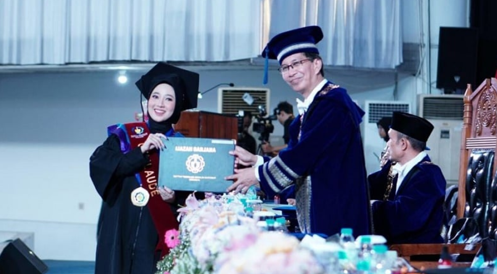

Nadya Andini, Tunarungu yang Raih Cumlaude dari ITS dalam 3,5 Tahun

Profil
Nadya Andini adalah mahasiswa penyandang tunarungu yang berhasil lulus dari Departemen
Studi Pembangunan Institut Teknologi Sepuluh Nopember (ITS) dengan predikat cumlaude dan
IPK 3,88 hanya dalam waktu 3,5 tahun
Perjuangan dan Strategi Belajar
Meski menggunakan alat bantu dengar, Nadya mengaku alat tersebut tidak cukup
membantu untuk mendengar secara sempurna saat kuliah. Untuk mengatasi hal ini,
ia selalu duduk di barisan depan kelas dan merekam penjelasan dosen menggunakan ponsel.
Di rumah, Nadya meminta bantuan ibunya untuk mendengarkan rekaman tersebut dan menjelaskan
ulang materi yang kurang dipahaminya. Selain itu, ia rutin melakukan belajar mandiri agar
bisa memahami semua pelajaran dengan baik
Tantangan Sosial
Nadya juga menghadapi kesulitan dalam berkomunikasi dengan teman-teman kampus karena
pelafalannya yang kurang jelas dan keterbatasan pendengarannya. Hal ini membuatnya sulit
beradaptasi secara sosial, tetapi ia tetap berusaha aktif dan tidak menyerah
Aktivitas Non-Akademik
Selain berprestasi secara akademik, Nadya juga aktif mengikuti berbagai kegiatan non-akademik
seperti Pagelaran Mahasiswa Nasional Bidang Teknologi Informasi dan Komunikasi (Gemastik),
membuat karya tulis ilmiah tentang aplikasi untuk teman tuli, serta magang di beberapa instansi.
Ia bertekad untuk terus mengembangkan diri dan membanggakan keluarga serta dosen yang selalu mendukungnya
Pesan Inspirasional
“Keterbatasan hanyalah awal perjalanan, jangan menyerah dan teruslah melangkah untuk meraih cita-cita pendidikan.”
Nadya berharap kisahnya dapat menjadi inspirasi bagi orang-orang dengan keterbatasan agar tidak menyerah dan terus
berjuang meraih cita-cita. Baginya, keterbatasan hanyalah awal perjalanan dan bukan penghalang untuk sukses